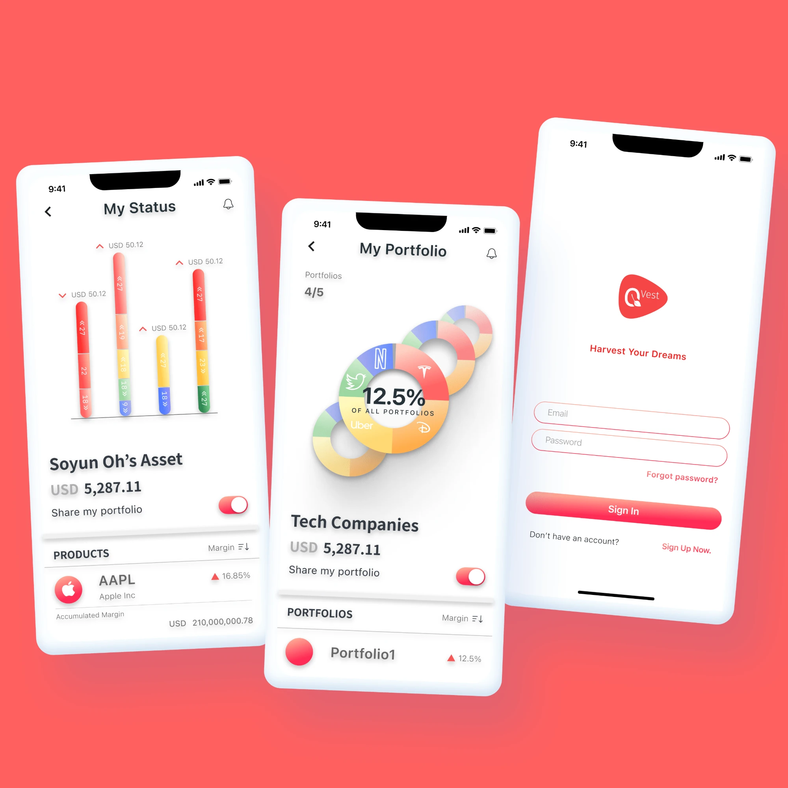

QVest
Building a savings product and its brand from the first value proposition to the first release.
- Role
- Founding designer
- Team
- Founders, 2 designers, 4 engineers
- Timeline
- 12 months, 2023
- Platform
- iOS & Android

The problem
People wanted to save for things they cared about, but existing apps treated savings as a number. The opportunity was a product that made progress feel personal. [Add the research behind the insight.]
Process
I shaped the value proposition with the founders, then designed the brand and the app together so the two felt like one thing. Prototypes went to early users every two weeks. [Describe a decision that changed direction.]
Outcome
The app launched to [N] users and reached [X] active savers in the first [period]. [Add press, awards or feedback.]
Next project